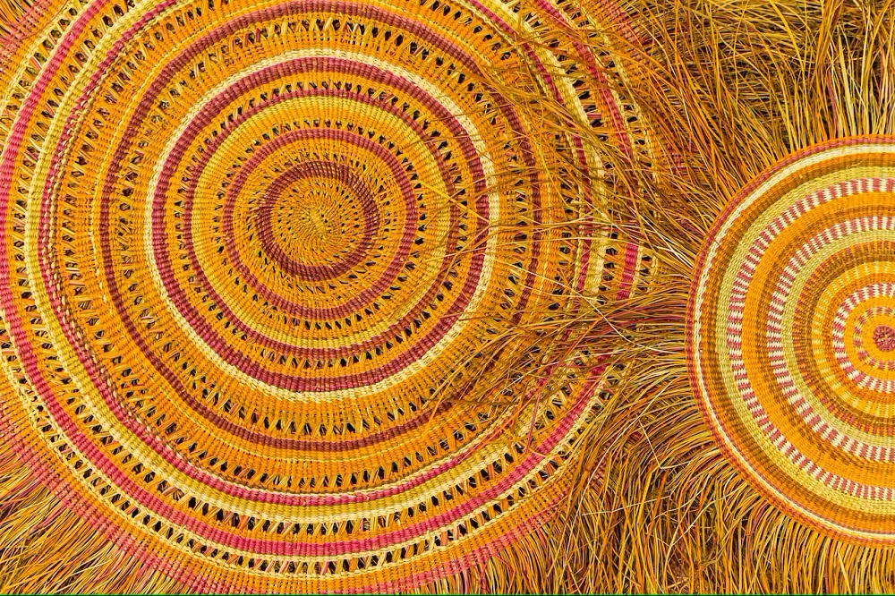
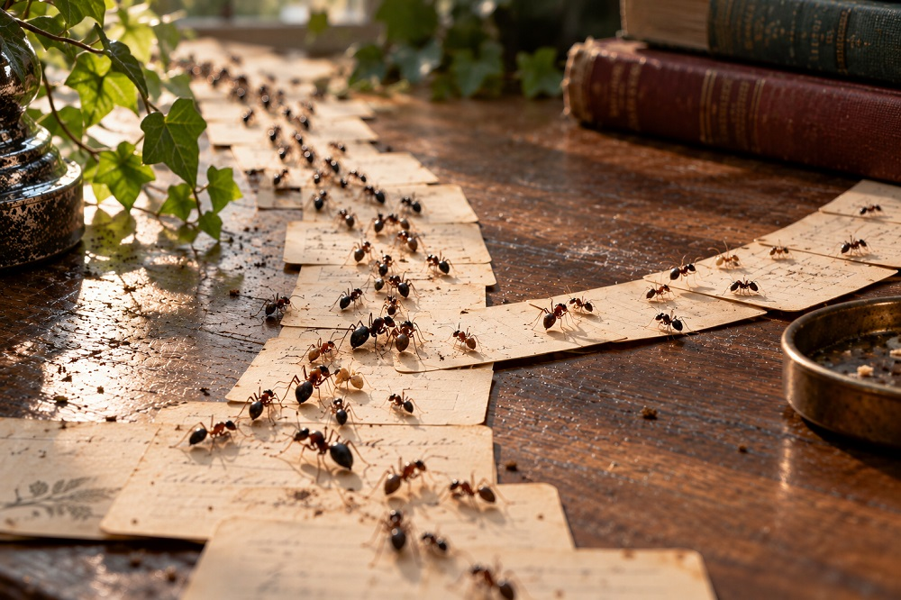

1A place to begin
Welcome. My name is Edgardo Civallero. I am a librarian, archivist, writer, researcher, musician, and naturalist. My work connects knowledge systems, cultural memory, the musical instruments of Latin America, and ecology. I write from Quisquiza, among the mist, cloud forest, and páramo of Cundinamarca, Colombia, where I also care for and restore native Andean forest.
For more than twenty-five years, I have written books, essays, chronicles, and scholarly work; designed semantic and documentary infrastructures; and worked with libraries, archives, museums, scientific collections, and communities across Latin America. My projects bring together classification, memory, sound, territory, and living systems, with particular attention to forms of knowledge that conventional institutions fragment, silence, or fail to recognize.
2Four paths through my work
Writing and research
For editors, publishers, academic readers, and general audiences.
Books, scholarly articles, essays, chronicles, fiction, current projects, and commissioned writing.
Explore publicationsLibraries, archives, and knowledge systems
For universities, libraries, archives, museums, NGOs, and consulting partners.
Knowledge organization, classification, metadata, semantic architecture, community archives, documentary systems, lectures, workshops, and advisory work.
Visit Tela de ArañaMusic and Instruments
For musicians, museums, festivals, researchers, publishers, and cultural organizations.
Research on musical instruments worldwide, with particular expertise in Latin America, including organology, sound and memory, MusIC classification, fieldwork, books, articles, public programs, and exhibitions.
Visit InstrumentariumVisual and material arts
For readers and collaborators interested in visual practice, craft, performance, and making.
Photography, illustration, puppetry, instrument making, graphic design, objects, and other visual and material arts.
Visit Estudio paramuno3Last Threads

From Quisquiza | Wind
Published October 02, 2026
The latest post in my blog Critical Notes, "From Quisquiza | Wind," explores wind exposure, thigmomorphogenesis, and the ways repeated mechanical pressure becomes incorporated into plant form. It considers prevailing winds, cumulative stress, research funding, institutional priorities, and classification, asking what knowledge systems reveal when the forces that shaped them are no longer visible, but remain embedded in their structure and history.
4Chronicles of Things Made
A log of recent writings, sounds, and gestures
Published October 02, 2026
Between September 21 and October 4, four new pieces move from community knowledge and manuscript traditions to ant trails and wind-shaped trees, following questions about circulation, memory, inherited pathways, and the conditions under which knowledge and living systems take form.
Amplifying Local Voices in Global Spaces examines what happens when locally grounded knowledge enters wider institutional, linguistic, and geographic circuits, asking how circulation can extend its reach without stripping away the relationships, conflicts, terminology, and conditions that give it meaning. What the Page Does Not Contain turns to the Sorabe manuscript tradition of southeastern Madagascar, exploring a documentary culture in which writing, oral transmission, specialist knowledge, and social authority remained closely intertwined. The Ant Trail Rewrites Itself uses pheromone trails and stigmergy to examine how traces of previous activity can shape later navigation, reinforcing inherited routes while still leaving open the possibility of revision. Finally, From Quisquiza | Wind begins with trees growing under persistent Andean winds and considers how repeated pressures can become incorporated into the form of organisms, disciplines, collections, and classifications.
5Recently published
Recent books, articles, and other publications arising from my work on knowledge and memory, libraries and archives, music, and ecology.
When Music Leaves No Objects: Yámana Vocal Practice and the Archival Bias Toward Instruments
An examination of how Yámana vocal practice exposes the object bias of archives, museums, and organological taxonomies. Focusing on a musical tradition centered on voice rather than instruments, the article develops a typology of absence and asks what preservation systems fail to collect, classify, or hear.
An Architecture of Vanishing: Toward a Protocol of Archival Disappearance
A proposal for treating disappearance, withdrawal, opacity, and finite duration as legitimate forms of archival care. The article develops temporal, spatial, relational, semantic, and material protocols through which archives may protect memory by allowing it to recede, transform, or end.
Fabricating Authenticity: Embera Nemboro Masks, Heritage Desire, and Metadata Fictions in Panama
An examination of how recently developed Embera basketry masks came to be presented as ancient ritual objects, and how markets, museums, and metadata can transform uncertain histories into apparently stable traditions.
6Collected Texts, Sounds & Traces
Books, articles, essays, chronicles, recordings, and earlier publications are gathered in a structured archive tracing my work across libraries, archives, knowledge systems, cultural memory, sound, ecology, and territory.
7Invitations and collaborations
I am available for commissioned essays and chronicles, book projects, lectures, workshops, exhibitions, advisory work, research collaborations, and public programs related to libraries, archives, cultural memory, traditional musical instruments, semantic infrastructure, ecology, and situated knowledge.